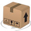
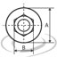
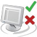

O ERP TECNICON é um dos mais completos e bem concebidos sistemas de gestão empresarial do Brasil.
A TECNICON tem know-how de mais de 20 anos de atuação no setor de TI (Tecnologia da Informação) e, com o diferencial de ser especialista em gestão, desenvolve uma variedade de ferramentas diferenciadas para sua solução.
Confira as Áreas de Negócio que compõem esse sistema:
Materiais 
Controla de maneira eficiente toda a matéria-prima de sua empresa.
Dentro do nosso software de gestão empresarial, os materiais poderão ser classificados por grupos, subgrupos, marcas, famílias e outras maneiras que sejam de fácil localização e controle.
Com esse cadastro, o tratamento do inventário e o domínio da movimentação dos produtos será eficaz, com agilidade para organizar as regras de preço e margens de lucro.
Compras 
Em breve.
Manufatura
Um dos maiores responsáveis pelo enorme sucesso do sistema.
Com uma maneira fácil de controle e planejamento da produção (MRP), esta área de negócio do nosso software de gestão empresarial ajuda a reduzir e controlar os custos de produção, melhora a gestão de materiais com o controle de estoque.
A análise antecipada dos gargalos de produção reduz os custos desnecessários com processos inadequados. Com isso, há uma redução de produção emergencial, permitindo o trabalho de forma planejada e ordenada. Com o controle de retrabalhos no sistema gerencial, verificação da produtividade por funcionários e de todos os processos, a gestão do departamento de produção torna-se simples, gerando melhorias em todos os departamentos da empresa.
Engenharia do Produto
Em breve.
Configurador do Produto
Em breve.
MRP
Em breve.
APS
Em breve.
CRP
Em breve.
MES
Em breve.
PCM
Em breve.
Desenhos 
Em breve.
Vendas
A área de negócio Vendas do ERP TECNICON tem ferramentas para o completo gerenciamento deste departamento.
No software de gestão empresarial, a agilidade está presente nos processos de orçamento, pedido e na venda efetiva, reduzindo o tempo de espera do cliente.
A área de negócio, a gestão de ações de televendas, vendedores internos e externos é melhorada. A área de negócio de vendas do sistema gerencial da TECNICON permite a análise de indicadores comerciais, trazendo mais agilidade nas negociações e acelerando o retorno dos negócios.
Além disso, a área de negócio também traz ferramentas de ordem de serviço e assistência técnica.
EDI
Em breve.
Vendas Loja
Em breve.
Auto Center
Em breve.
Licitações
Em breve.
PDV
Em breve.
PAF/TEF
Em breve.
Logística
Com os recursos disponíveis no nosso software de gestão empresarial, é possível realizar um controle e gestão total da movimentação interna, de clientes, fornecedorres, terceiros e estoques.
A agilidade na organização ds parâmetros de funcionamento da empresa ajuda a reduzir os prazos de entrada e saída dos materiais.
É possível a vinculção com livros fiscais, contabilidade, estoque, custos, finanças e arquivos fiscais com o Sintegra.
Além de todos esses benefícios, a área de negócio Logística possui, ainda, integração com a ferramenta de Nota Fiscal eletrônica, com controle, emissão e recebimento, dentro das normas legais exigidos pela Receita Federal.
Faturamento
Em breve.
WMS
Em breve.
Finanças
Solução completa para o gerenciamento do departamento financeiro, de forma muito rápida e eficaz.
Esta área de negócio do nosso software de gestão empresarial atende o setor em todas as necessidades, permitindo uma melhor administração das transações financeiras.
Oferece, ainda, análises de fluxo de caixa e visibilidade de previsões financeiras, utilizando gráficos e relatórios que otimizam o tempo para a tomada de decisões estratégicas.
Controle de Viagem
Em breve.
Contabilidade Gerencial
Com essa área de negócio, é possível organizar a contabilidade fiscal, gerencial e orçamentária, estruturando as regras contábeis da empresa e fornecendo instrumentos para a análise de indicadores.
Os balanços, balancetes, demonstrativos de resultados e toda a gestão orçamentária podem ser feitos pelo módulo, reduzindo riscos com informações duvidosas.
Sua empresa estará dentro de todas as normas legais exigidas, com redução de tempo e integração de processos.
Gestão Fiscal 
É a ferramenta perfeita para controlar todas as informações fiscais da empresa, sempre dentro das normas e prazos exigidos pela legislação.
A agilidade e segurança na geração das regras de apuração dentro do nosso software de gestão empresarial fazem a diferença na gestão do departamento.
Controle Patrimonial
Em breve.
Gestão da Qualidade
É ágil e eficiente na gestão de documentos da qualidade, garantindo o melhor gerenciamento dos indicadores de qualidade.
Com instrumentos como grupos de trabalho, projetos de melhoria, equipamentos de medição, inspeção de produção, acompanhamento de projetos e rastreabilidade, entre outros, nosso sistema gerencial ERP Tecnicon ajuda sua empresa a garantir a permanência e adequação às normas, garantindo a qualidade de seu produto.
B2B
Facilita o controle dessas ações, com agilidade na comunicação on-line entre empresas, filiais e locais diferentes.
O sistema gerencial proporciona uma melhor gestão unificada da empresa, com informações atualizadas em toda a organização.
Recapagem
Em breve.
Controle de Grãos
Em breve.
Posto
Em breve.
Controle de Portaria
Em breve.
Portaria de Veículos
Em breve.
Transporte
Em breve.
Gestão de Frotas
Em breve.
Gerenciamento de Ativos 
Em breve.
Gerencimanto de Configuração
Em breve.
Gestão de Telefonia
Em breve.
Gestão de Projetos
Em breve.
Gestão de Atividades
Em breve.
Portal do Fornecedor
Em breve.
Importação
Em breve.
Exportação
Em breve.
Controle ACI
Em breve.
Gerenciador do Sistema
Em breve.